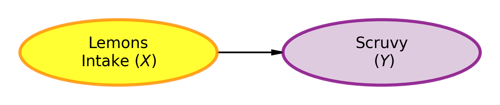
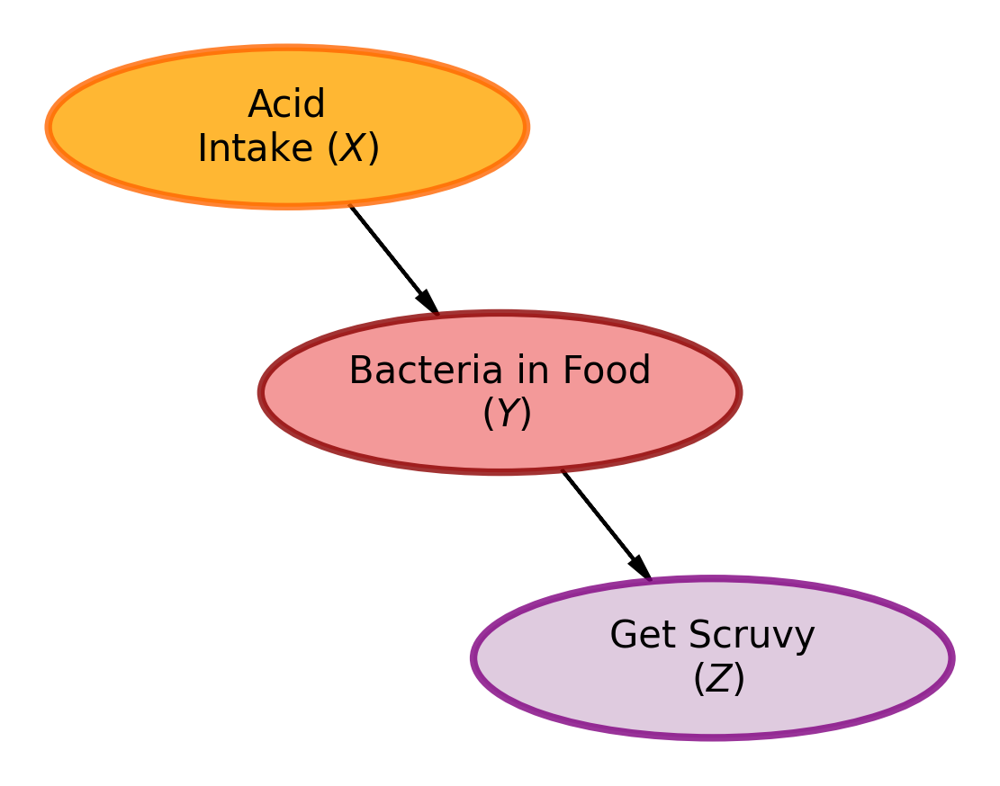
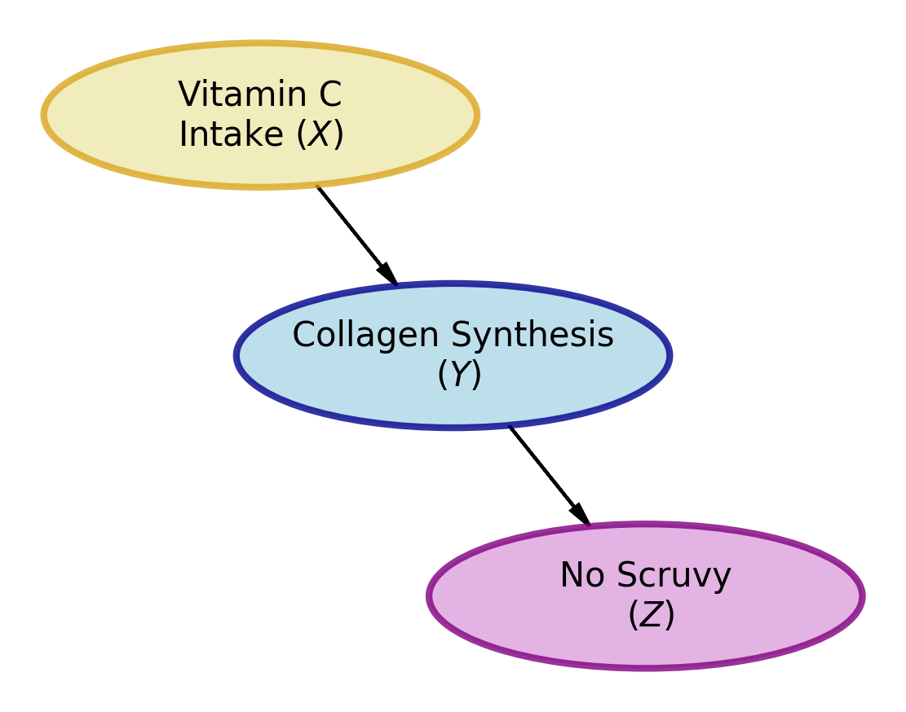

DAFT Package Challenge
Recreating the Scurvy DAGs with Beautiful Visualizations
The Three DAGs: Your Mission
Your task is to recreate these three historical DAGs using DAFT, making them visually appealing and professionally formatted.
DAG 1: The 1747 Understanding (Correct but Incomplete)
Historical Context: In 1747, James Lind discovered that lemons prevent scurvy through a controlled experiment. However, the understanding was incomplete - they knew lemons worked but not why.
Your Task: Recreate this DAG showing the relationship between lemons and scurvy prevention.
Reference Image: 
NoteAnalysis of DAG 1 (1747 Understanding)
This simple DAG captures James Lind’s 1747 discovery that lemons prevent scurvy. The two-node structure (Lemons → Scurvy) is correct in its conclusion but incomplete in its mechanism. While Lind’s experiments proved lemons were effective, the lack of understanding about why they worked led to the cure being lost for over 150 years when people mistakenly replaced lemons with other acidic foods that lacked the critical component—Vitamin C. This demonstrates the importance of understanding complete causal mechanisms, not just correlations.
DAG 2: The Misguided Belief (Wrong Understanding)
Historical Context: Over time, people came to believe it was the acid in lemons that killed bacteria which was causing scurvy. This led to lemons being replaced by limes (cheaper but less Vitamin C) or just using acids like vinegar, causing scurvy to return.
Your Task: Recreate this DAG showing the incorrect understanding of the data generating process.
Reference Image: 

NoteAnalysis of DAG 2 (Misguided Belief)
This DAG represents the unfortunate misunderstanding that emerged when people lost sight of Lind’s original findings. The three-node structure (Acid → Bacteria in Food → Get Scurvy) introduced an intermediate causal step—the belief that acid killed harmful bacteria in food. While this model attempted to explain the mechanism that DAG 1 lacked, it proposed the wrong mechanism. This error proved disastrous: people began using limes (cheaper but with less Vitamin C) or vinegar (acidic but no Vitamin C), leading to scurvy’s return after it had been largely eliminated. This DAG demonstrates how a mechanistic explanation can be more harmful than no explanation at all when that mechanism is incorrect—a cautionary tale about verifying causal assumptions before applying them in practice.
DAG 3: The 1928 Understanding (Complete and Correct)
Historical Context: In 1928, the true mechanism was discovered - it was Vitamin C (ascorbic acid) that prevented scurvy. This complete understanding finally explained why lemons worked and why the acid theory was wrong.
Your Task: Recreate this DAG showing the complete and correct understanding of the scurvy data generating process.
Reference Image: 

NoteAnalysis of DAG 3 (1928 Understanding - Complete and Correct)
This DAG represents the complete and accurate understanding achieved in 1928. The three-node structure (Vitamin C → Collagen Synthesis → No Scurvy) correctly identifies both the causal agent (Vitamin C) and the biological mechanism (collagen synthesis). This model synthesizes the insights of the previous two DAGs: it provides the mechanistic depth that DAG 1 lacked while correcting the flawed mechanism proposed in DAG 2. It explains why lemons worked (high Vitamin C content) and why other acidic foods didn’t (they lacked Vitamin C). This complete causal story enabled proper scurvy prevention that could be reliably applied and maintained. The 1928 DAG demonstrates the power of understanding complete causal mechanisms—it’s both practically effective and scientifically rigorous, serving as a model for how to build robust causal models that stand the test of time.